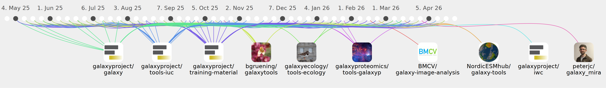

bgruening

Commits all-time: 12815
Commits last year: 950

(432)
- d6fe847
- 26da562
- dc44568
- ff9db95
- 7120e14
- 61f7214
- 24d5739
- 2652aac
- 671a5fc
- 5b9441b
- 49a2861
- 8a0f309
- c142110
- 048d285
- 5607ad5
- 06a9256
- 9fda5dc
- 7df6ad6
- abb5f0f
- 24152e2
- a336563
- 8cca52c
- df3de3f
- af516fb
- 606882f
- 7ab4dc5
- e5089a1
- c04516d
- 93fe734
- dffbb5d
- 26f0c73
- 731f04b
- 5706be8
- 949cb30
- 9c5a35c
- 956c476
- 16701bf
- 04a0675
- a7a73e8
- 84328e6
- 900be4e
- f0f67e9
- a9214c0
- a066d90
- 5c9373c
- 863e6e6
- 3178947
- 0486361
- 85683b4
- 91121b1
- 891fc63
- 7ea6e1e
- 67b3808
- 293d70b
- 3d8e0f1
- 8fce1c9
- 82cd588
- 8ebea55
- dff8182
- 3483306
- 5b5bc16
- 873f4d3
- 982fe89
- aed7fe1
- e4b7fe7
- c4750d8
- 1a74552
- cbe1a59
- c3d9d45
- 4babe88
- ceabe93
- 303002d
- bf308a3
- 3d2fd0d
- d2d7bf4
- 9e0ec10
- c81cc29
- 8bb518e
- efa9995
- a9a143b
- 490c050
- c2e1750
- 506782d
- cb7dc8f
- a711206
- dcd584f
- 82eef3f
- 4bc3ef8
- 6525c21
- f38778f
- 5f8e6e7
- be699fd
- e9f254e
- 037dd65
- 03fbb13
- d27456c
- 960c1f6
- 4225d0f
- 6737c92
- 671e8c7
- 0f11c04
- d287d56
- 199ab9e
- d7e29bd
- 35cb29a
- fbd5592
- 54cc705
- 80b06e8
- dc9ef5c
- 6ea92ef
- bc1b362
- 2bcb9bf
- fb9914c
- c36c44c
- 747394d
- 32feb54
- a3a1614
- 25c9d8d
- 0770184
- 963634c
- 2c9e4e8
- 2b5715a
- 9e0ce6d
- 868742d
- fb87911
- 75d5141
- 55ba4cd
- 9835da3
- d3549bc
- 1550e33
- 1339807
- be7249f
- 296061c
- 1019bf0
- a6a1392
- 33bc2ba
- 52b81aa
- eb56388
- 938f808
- 341b43a
- f23db5c
- 639d331
- e387e85
- 80f219b
- d63591a
- 8565e82
- cb7f20b
- 491bc02
- 8e14f77
- a843752
- 79133bc
- 566984b
- 4a156b1
- 54e8627
- d1eee78
- 0ffa71e
- 771baec
- 9da13f5
- 7f0e2a6
- a9dc6c2
- 08d8b9a
- 0ee665c
- b76fe0b
- f3b5a8f
- 975a3b7
- e3d7e01
- dcef254
- dc0a3f2
- 8bbf4f1
- b537658
- 79a21a9
- ee9a267
- bb6d9b5
- 64c7062
- 0807ba5
- 94142a1
- 8da9481
- 9fe04d2
- fe5de3e
- 5475577
- 61e2628
- 7e8d59d
- 280d524
- 3dcb1c9
- 4c1b74f
- ac8a3a4
- c575674
- 8445047
- f657597
- 9da8f86
- 6db2d98
- 66e4f50
- 5fecdbf
- 685c4b0
- 14f7494
- f0d8906
- 3a5c3a6
- 4145612
- 079ef94
- cf03c3f
- 2fed273
- 8ead4ce
- 31d64f9
- 26a6ad2
- b6798b5
- 10dfb13
- c9c0b71
- 77633d0
- 69bb60a
- 63179f3
- abbc840
- 9412d51
- 4684045
- 3dd3145
- 060f673
- 1562300
- d2208e8
- 6a77207
- 8c89adc
- e151cf9
- 37428f0
- 66be7bc
- 3f7bec1
- 4dba8c0
- 56658d5
- 6d85318
- d905841
- 772b364
- 90b5334
- 5de5039
- 637a6eb
- e6b2304
- 26f87cc
- 4f6d044
- bfba484
- 54ed1c9
- 550cd60
- f02ef28
- 273fabe
- ec96d43
- 420778a
- 043f6bb
- bc5bbb2
- 08f38b1
- 59b031e
- 5199552
- 1908854
- 9038342
- 53ece29
- 1805997
- f43fe42
- 37e664b
- 288d9be
- ed1976f
- 93234a6
- 6428c6a
- c6f85f5
- 448f053
- b49b89f
- 8031afb
- c053651
- ed4091f
- 10bc957
- 62db819
- 980f747
- 1facbf5
- d6888da
- bcf2ec3
- 068be9b
- f38872c
- 8857ae5
- 09a7f12
- 528c810
- 05daaa6
- 02d3e5c
- 81e2b45
- 411c71b
- 89a1ecf
- f04670e
- ff56f02
- 430cd92
- b548a50
- d6846cd
- 7a50275
- b2b3ce2
- 2df0344
- cde4cce
- b4044d2
- 881c4f0
- 112af25
- c0d7c69
- 20fd266
- f2b3986
- b3c4dca
- a21363c
- acac4f9
- 062d683
- 04b7d34
- 0f93550
- fdaa460
- d9f541d
- 62edff3
- 327834d
- de98c17
- 5c9fd72
- 2ae2ddb
- 7f250f4
- ccc7857
- 2672414
- bfeaaf8
- 688b851
- cb9e88d
- 9c3372b
- 1c7abf3
- bb83e01
- e567b31
- 73ebd55
- 17bf763
- e7ec0dd
- c45c312
- 20c6e31
- 9d6123a
- 06d653e
- 11a7415
- 099f08c
- f02f375
- 41b2cdf
- 64d29a8
- 8341270
- 40350c8
- 0b67127
- 8eca6c0
- 13a1044
- 9ce4997
- 0930535
- 71ee181
- f1fde73
- a5ae2f8
- 0ec1ca5
- 1897a3f
- e953b3b
- bd71427
- 0c588c1
- 14178ea
- e9c80d2
- 865bc9a
- 7199898
- 6419b68
- 08ce25c
- fa72d86
- 2d69e62
- 20a4ded
- c4c483b
- d127fc2
- 697c084
- f12bb78
- 035d59f
- 23afccf
- 09b98db
- 8b3e6e5
- 55c61a5
- 611b90f
- 0a507d9
- c420596
- 68607e0
- 3803ea0
- 32f1099
- b9d360e
- 2b9a07e
- 5c64462
- 7622619
- c5721c9
- 85ece54
- 425535e
- b8bb585
- 708071a
- 607e1d0
- 8e0168d
- c829290
- ed98c90
- 61b465d
- cdd582a
- b2afe48
- 56fd82d
- 814017d
- 2cc7781
- c62791a
- 24dc637
- 85ea746
- f79f470
- c91b1ba
- 56eb8ea
- ff0a9b6
- 9a1b668
- f76d199
- e554cfd
- b9c33a8
- 483a133
- 0daaffa
- 07109d5
- b326141
- 49e7596
- 7bac5b8
- e5d0d8e
- 4adb190
- 06cd9c7
- e713fc7
- c508c3a
- 0e305d2
- b8c8ce0
- 4120f06
- 1a566c8
- 03d00ec
- f1ec0d8
- cf70bdb
- 8b3c2a9
- 09c8e25
- 8021078
- bf26626
- d80cc18
- a876dd4
- e84f1b2
- 793163e
- 3f69d66
- 496b4b5
- a0769bb
- 20e1410
- f1dbc91
- b0db941
- 1419784
- daf5666
- 8f1b87d
(328)
- a415f18
- 9d9c7e4
- a09b441
- 8ae150f
- 3a1c6f7
- dae5db3
- d373a81
- 1686eb3
- f428f08
- 7cb2e1e
- 5978fef
- ef82945
- 8a1e367
- 09fb007
- 0f0cac4
- 88616d9
- 9cc53bc
- 2ca11ed
- a80a54e
- 805200e
- a50aff5
- 2b8310c
- 0fd5e29
- c43a093
- bfcd34c
- 78e3bd4
- a419677
- ef18abc
- e6e57b1
- 106088e
- aadfd71
- beee42d
- 3325e5a
- afd0ce9
- 95d4e97
- 4ab5654
- 3e4a34e
- 0b2f231
- ab9dfae
- 0ad1cd1
- 993b1d4
- a873058
- 0b1263e
- 04e9fea
- c03b5a6
- 49cec9e
- 8c6dce4
- 6c01a4d
- af91bd2
- 39f8349
- 74e8834
- e513cb4
- 398f9b8
- ce69019
- 400dd51
- ac63145
- 91f2b2f
- 7af2d65
- e3baa75
- 7cafb5c
- 3c6005a
- 674ab70
- 8ead704
- 541df97
- 92c7368
- b61fe20
- c72727a
- e26a0aa
- 8081253
- d6a69de
- fef08b3
- d0702ea
- 0bf34ca
- 45cc0a6
- fcce88c
- d4c7257
- 6e00fa4
- 0c8ee42
- 23f09d8
- 63c5ef8
- 8b32a33
- f2dc6ae
- 5012353
- 851f875
- ace859b
- 1d9d2ce
- dd4bb2c
- bcbd65b
- 4a250ad
- 16a1b8b
- 3333297
- c6c9881
- b5a82ab
- b8bcae3
- b719863
- f71ea7d
- 65ae7df
- f9a9393
- 55607e9
- e418e5d
- 0892628
- 098881d
- 5051f5e
- 8b03486
- 1679c87
- d25ca28
- 44402a4
- 705a89b
- ad9746a
- ad2c319
- f955159
- dea2908
- 87017d5
- e82d859
- db0c940
- 7367b58
- 9c426c3
- c3373da
- 7bb60a7
- a10f1b1
- 7f48d3b
- 4273115
- ae1dd1f
- afca823
- 0db3be3
- b38e78f
- 50d4c42
- b1e9b64
- fe72b97
- 1979953
- 98ac16f
- dc5844b
- b9834ed
- 0869f54
- 41798fe
- 17a8fb4
- e336cce
- 4e15cd2
- 7987e9b
- 9c7657a
- 3c41b9e
- 3843178
- 3b5a7b2
- 687690b
- 4fe4bf4
- e2db3cf
- b25abfa
- 2cedfc1
- 47ef010
- d9926f2
- b2b69a1
- a71ebfa
- 02197e6
- 604b572
- 688ab6b
- cd03625
- f2b895d
- 6885727
- 4da7033
- 5bb4e95
- 3f7cdbb
- a298177
- a820f1f
- 4701c12
- 1773f04
- fbba5d9
- 04d2c9d
- ea1a7a2
- e716ab6
- 93ecb38
- 121f313
- 8c7ed91
- e33421b
- 60f974e
- dedf090
- a2d52b7
- 2fcbcb0
- 1e8e253
- 04a5c53
- 5856964
- 57d4248
- ef462bd
- bfb40f5
- b0db256
- 4c9cea7
- f4b92a1
- 7919849
- 1152bf8
- ef2748b
- 24a3de2
- 397b7dd
- 56a7d2e
- 0e8acd5
- b74151a
- 362aab1
- 1d338c8
- b1fc895
- 207b951
- d84e781
- e9c31b6
- c319d30
- 158cbe6
- 7e71748
- a8dcca6
- 67d7c88
- 05bbcef
- fbcf2c2
- b373a2f
- ef2ec75
- b4f2d60
- f0f303a
- 5d8f2df
- d29ede7
- ef93af6
- 46f2250
- 8934ca6
- 0d7ebcc
- b4cd66b
- abb12a2
- 5fa6955
- ba50439
- 2bd667a
- 5632b05
- 923a043
- a334633
- 9d33404
- 7ce31db
- 0c17f00
- 4c17152
- 1203bbe
- 8a72d2b
- 89f77d2
- 0a062c6
- cdd047f
- ead5c35
- 486a1b5
- fa44b9b
- 1fc8b27
- 14026e6
- 8f514dd
- 8341182
- 4c10d9d
- 954d234
- dc09489
- 673fb63
- 301fa06
- f7e3188
- a378d24
- fde1850
- bd4770b
- 76d6987
- a414cf3
- af3dc55
- d9bb50f
- 5cd2a04
- bc984ed
- 65231a4
- ce764af
- 11f69a8
- 4269140
- 0799a6e
- 54f9e44
- fa984f4
- cee1cef
- 2e15c7a
- 412b96a
- 9b52283
- 6f95990
- 646eed2
- 07c1973
- 32a0c09
- 60d48d3
- a826532
- 98f1d9f
- 837be0d
- 7d03468
- 7c99fe3
- 7a2d90f
- 51f2c5d
- 0a454c0
- f8fc276
- 7c6c5bb
- 7e4aafc
- d8902b3
- d783a08
- cb5bc03
- fa9ff97
- 888c48a
- 520456c
- c17e3fc
- c1ebed5
- 39028d7
- da29dc6
- a350368
- 542805a
- c49e358
- 31e3734
- f796d9f
- 4e9bba4
- 68c6afd
- b935261
- 23b11dc
- ada1131
- 26a5239
- 972f9d3
- 8912288
- 93aecbb
- ee572ff
- 0721b8c
- 14fe96f
- c48a945
- 209917d
- a734af7
- a2e9664
- ac2da24
- 5105a19
- 5322fb1
- 544d0d4
- f611b58
- 156a150
- 53a15db
- cc1d3b4
- 5ab50a3
- 0d14de5
- a8b492a
- b2469f8
- c4088df
- 082b42a
(82)
- 2231152
- 543ad8b
- a716782
- c3738ad
- ef4e32f
- 23f946e
- 6432629
- aa25ec5
- f39f5ab
- 103879e
- 106b038
- 0bdbb34
- 4a3e6dd
- 5136cbe
- 7cf1356
- d914cac
- d18bc68
- a2ff018
- fe27c21
- 21cab6d
- 1a6b7fe
- 17be124
- 29cd291
- d11d893
- d4b2b83
- 03307f6
- c6a10d6
- 3ff3843
- a5aaa1c
- 206b729
- 3efa4c1
- a4f6c4c
- 6a017b9
- be68f7b
- f12646d
- 58c22dc
- 285bdf4
- 3f3fd82
- 9d0e800
- 33cabba
- 9b43bf5
- 5c28aaf
- fb8f001
- c257b7d
- d4b433b
- 0c63d81
- c593be1
- 38ead39
- 0378f9a
- 4b15a2a
- 3f01d5b
- 3586026
- 2fa201e
- 65c55eb
- 2a29428
- 7713d21
- fb0cbdc
- a27582d
- 8294be7
- c267101
- badd292
- 22d66d3
- bedf19b
- 9bea32e
- d3a10de
- 8aec725
- dfeabbe
- ed07ddd
- 4c9383d
- caf3ea0
- 9be0736
- 46c35f3
- 54d98a1
- 5b95209
- 423922e
- 8d530ee
- b2340aa
- a08f04e
- 71ff613
- 39f1b26
- af684f2
- db4e08a
(69)
- 902e994
- 0781c56
- 9638c09
- be43724
- 4973502
- e6b66d6
- a2a8306
- 9857330
- 49709e6
- 7fe2287
- bce8b02
- 3b46831
- 3a7c1e0
- 2da4362
- 8fb9112
- 5846f23
- 7cdafed
- cefdfdc
- 35d6a24
- 9204374
- f038722
- 58a5ecc
- 973836f
- dc39574
- aaa9d49
- b8612d1
- 7e231a4
- 3fd636f
- 78581c8
- 9e78632
- 5eb22d5
- 293dc13
- 6303638
- ae2dcf8
- b17cc0d
- 7790898
- 7334cd8
- 2a1da42
- f8ccc97
- 662df3c
- 25cbe53
- 62e9146
- 6cd506f
- 1ede2c0
- 6ac2834
- 1011b91
- 198f1f9
- ac4753a
- 9ec5898
- 9ab85a4
- 606e6fc
- 80167f5
- 23a0903
- 16e04b2
- b2463fb
- e6e09ea
- d3154a8
- c658843
- 2ffeb5d
- 285ab19
- 58df959
- 3f1539a
- e466e3b
- 1afbaf4
- 8553b76
- d38aa8a
- 26fee37
- 9685f84
- 739bcab
(13)
(13)
(5)
(4)
(2)
(2)